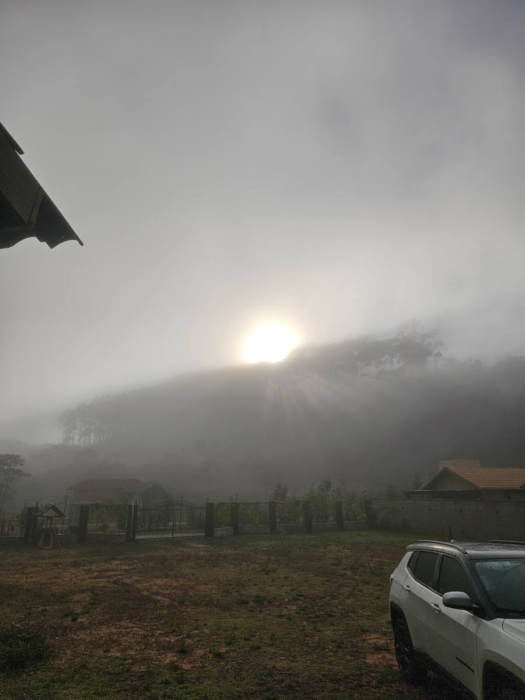
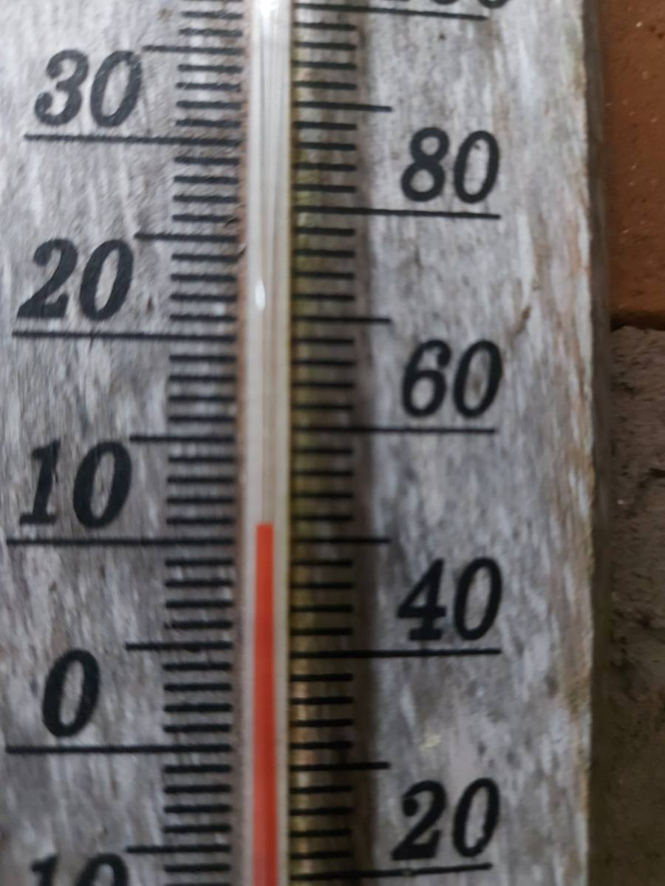
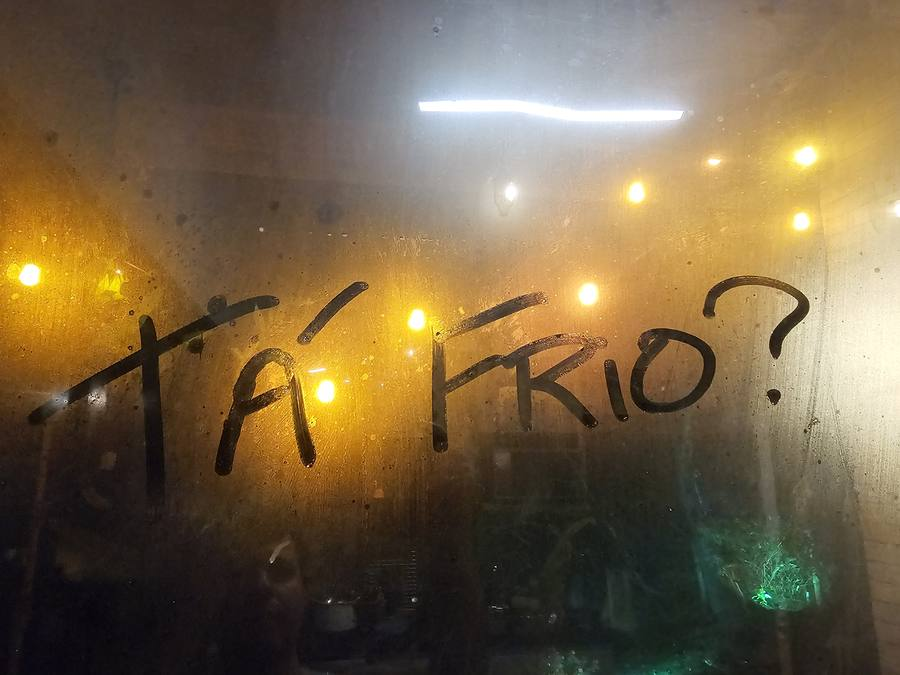
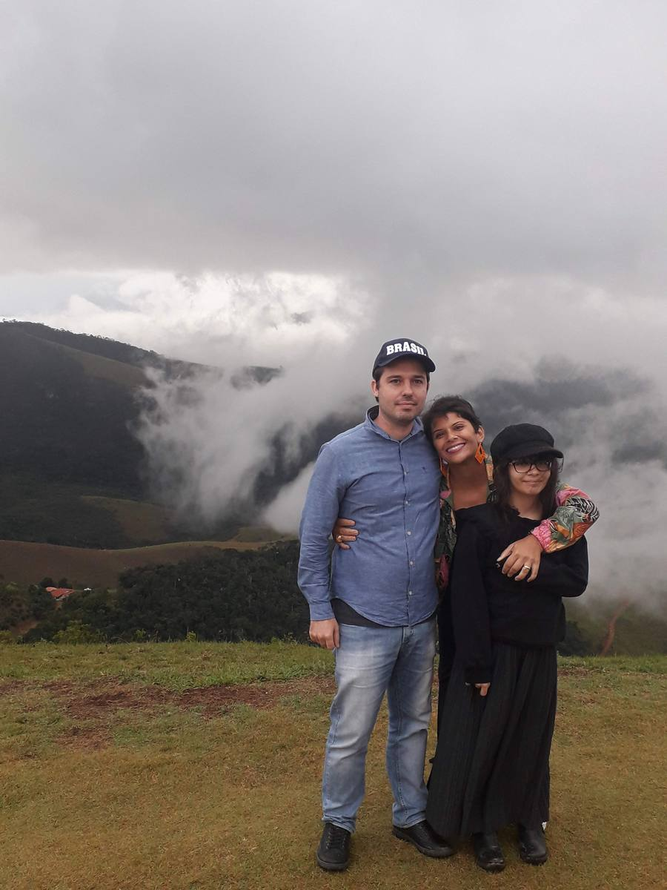

O clima de Santa Teresa: por que 675 metros mudam tudo
Quem vem de Vitória faz sempre o mesmo movimento. Sobe a serra com o ar-condicionado ligado, abre a janela na metade do caminho e não fecha mais. Não é impressão. São menos de 80 quilômetros de distância, mas 675 metros de altitude — e é essa diferença de altura, não de distância, que explica tudo o que se sente aqui em cima.
A conta que a altitude faz
Existe uma regra simples na atmosfera: a cada 100 metros que você sobe, o ar esfria cerca de 0,6 °C. É física, não sorte. A sede de Santa Teresa está a 675 metros — a mais alta do Espírito Santo. Vitória está praticamente no nível do mar.
Faz a conta: são uns 4 °C de diferença, todos os dias do ano, sem depender de estação, de frente fria ou de sorte. É por isso que você não precisa de ar-condicionado aqui. E é por isso que aquelas famílias italianas, que chegaram em 1875 sem nenhum aparelho de medição, sentiram na pele que dava para plantar videira nesta serra.

O ano inteiro em números
Médias de uma série de 30 anos, mês por mês:
| Mês | Mínima | Máxima | Chuva |
|---|---|---|---|
| Janeiro | 21 °C | 29 °C | 160 mm |
| Fevereiro | 21 °C | 29 °C | 116 mm |
| Março | 21 °C | 28 °C | 171 mm |
| Abril | 19 °C | 26 °C | 115 mm |
| Maio | 17 °C | 25 °C | 56 mm |
| Junho | 16 °C | 24 °C | 35 mm |
| Julho | 15 °C | 23 °C | 39 mm |
| Agosto | 16 °C | 24 °C | 46 mm |
| Setembro | 17 °C | 25 °C | 64 mm |
| Outubro | 18 °C | 26 °C | 119 mm |
| Novembro | 19 °C | 26 °C | 236 mm |
| Dezembro | 20 °C | 28 °C | 236 mm |
Olha o que esses números dizem: a máxima mais alta do ano é 29 °C. Não 35, não 38. Vinte e nove, e só em janeiro e fevereiro. No mês mais quente, a temperatura daqui é o que muitas cidades brasileiras chamariam de dia agradável de inverno.
E a mínima mais alta do ano é 21 °C. Isso quer dizer que mesmo no auge do verão a noite cai. Aqui não existe aquela madrugada de 27 °C em que você troca de lado na cama esperando amanhecer.
Mas média é média. A noite de frente fria é outra história
A tabela diz 15 °C de mínima em julho. Isso é a média do mês — e média esconde justamente o que a gente sente.
Quando entra uma frente fria, a mínima aqui cai para 10 °C ou menos. Este termômetro de parede, na minha casa, é de uma dessas manhãs:

E não é só na minha varanda. A cidade tem um termômetro na praça, junto do relógio da prefeitura — coisa de lugar que tem orgulho do próprio clima e gosta de conferir quanto marcou:
Nessas noites o vidro embaça, alguém escreve na janela, e a pergunta é sempre a mesma:

Vale deixar claro: nunca geou em Santa Teresa. Não é frio de sofrer, é frio de gostar — aquele que pede meia, coberta e um motivo para acender fogo. Que é diferente de calor, que não tem solução nenhuma além de ligar aparelho e pagar a conta.
Julho é o mês que explica a cidade
Se eu tivesse que escolher um mês para mostrar Santa Teresa a alguém, escolheria julho. Máxima de 23 °C, mínima de 15 °C, 39 mm de chuva no mês inteiro — quase nada. É o mês mais seco e o de céu mais limpo do ano.
Mas o número que mais me impressiona é outro. Contando os dias de mormaço, aquele ar pesado e abafado que faz a roupa colar no corpo: janeiro tem 28 desses dias. Julho tem 3.
Três. No mês inteiro.
É por isso que julho aqui não é um mês para atravessar, é um mês para aproveitar. Vinho, fogo aceso, blusa de manhã, sol de tarde.
O que os números não mostram
Tem uma coisa que tabela nenhuma captura: a amplitude. A diferença entre a máxima e a mínima aqui fica em torno de 8 °C todos os dias — o que na prática significa que você vive dois climas por dia. Manhã de blusa, tarde de camiseta, noite de coberta. O ano inteiro.
Isso muda o jeito de morar. A varanda funciona em qualquer mês. O ventilador de teto quase não sai da caixa. A janela aberta é o padrão, não a exceção. E aquela neblina que desce no fim de tarde, cobrindo o vale de branco, não é evento — é rotina, e é de graça.

Um recado honesto sobre a chuva
Novembro e dezembro trazem 236 mm cada um. Contra 35 mm em junho. Ou seja: chove sete vezes mais no fim do ano do que no meio.
O que isso significa na prática, para quem vai morar aqui e não só passear:
- Estrada de chão vira outra estrada. Aquele acesso tranquilo de julho pede atenção em dezembro. Se o imóvel que te interessa tem trecho sem calçamento, visite na chuva antes de fechar — ou pelo menos pergunte de quem mora ali como fica.
- Umidade pede projeto. Casa fechada em serra úmida junta mofo. Ventilação cruzada, sol entrando em pelo menos um lado e beiral generoso resolvem quase tudo — e são decisões que custam pouco na planta e caro na reforma.
- Terreno em declive precisa de drenagem pensada. A água que desce em dezembro é a mesma que você não vê em julho, quando está visitando.
Nada disso é defeito da região. É o clima de Mata Atlântica de altitude fazendo o que faz: é essa chuva que enche as nascentes, mantém a mata verde e sustenta as parreiras. Só é bom saber antes.
E dentro do município o clima também muda
Esse é o ponto que quase ninguém conta, e é onde entra o meu trabalho.
Os 675 metros são a altitude da sede. O município é grande e acidentado, e cada terreno tem a sua própria altura. Uma casa a 860 metros na Rota do Caravaggio é sensivelmente mais fresca do que um lote perto do rio. Uma encosta virada para o nascente pega sol de manhã e alivia a umidade cedo; a mesma encosta virada para o outro lado passa a manhã na sombra.
Na prática, dois terrenos a três quilômetros um do outro podem ter noites com 2 ou 3 °C de diferença. Não está em tabela nenhuma. Descobre-se subindo a estrada e conversando com quem mora.
Quando eu levo alguém para ver uma área, é isso que eu observo junto: de que lado nasce o sol, para onde a água escorre, se o vale segura a neblina até mais tarde. Porque comprar bem na serra não é comprar o número da tabela — é comprar o pedaço certo dela.
Quer conhecer terrenos em Santa Teresa e no Circuito Caravaggio, com o olhar de quem mora aqui?
Falar com a Milla no WhatsAppMédias mensais de mínima, máxima e precipitação: climatologia da Climatempo para Santa Teresa (ES), calculada sobre série de 30 anos. Dados de dias de mormaço, céu limpo e sazonalidade da chuva: WeatherSpark, que modela a estação de Vitória — por isso as mínimas de inverno aparecem lá mais baixas (em torno de 12 °C) do que na série da Climatempo (15 °C). A altitude de 675 m da sede é a maior do Espírito Santo. O gradiente de 0,6 °C por 100 m de altitude é a taxa média da atmosfera e serve como estimativa, não como medição local. Clima é média: ano atípico existe, e as mínimas de noite de frente fria ficam bem abaixo da média mensal. Fotos: arquivo pessoal. A leitura de pouco menos de 9 °C é de termômetro doméstico de parede, não de estação oficial.